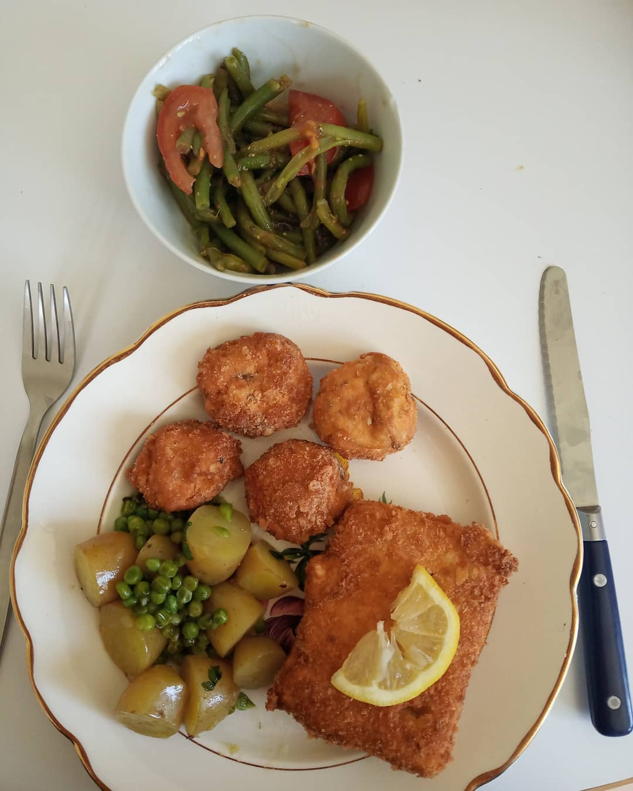

Vyprážaný syr podľa @essenscuisinelamonique — Normy Jedál
Po dlhej dobe sme mali takú Slovenskú, teda asi aj Československu klasiku.
Vyprážaný syr 🧀
Vyprážané šampiňóny🍄
a skoré zemiaky na pare s maslom a vňať petržlenová 🌿🥔
Šalát 🥗
Zelené fazuľky , rajčinky a vinegret omáčka 😋
#essenscuisinelamonique#vyprazanysyr#klasickejedlo#sampinony#haricotsverts#salat#tradicie#ceskoslovenske